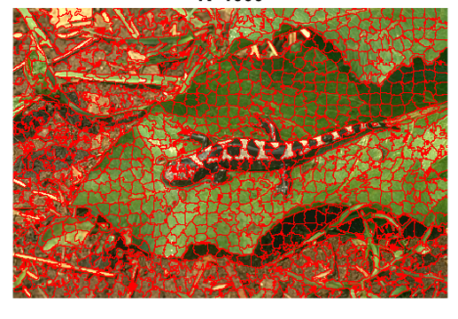

01 / TRAITEMENT D’IMAGES
Projet · Segmentation par seuillage
Du ciel à la terre — trois problèmes, une méthode.
Comment distinguer automatiquement les nuages du soleil ? La végétation du sol nu ? Les piscines des toits ? Ce TP répond à ces trois questions réelles avec des techniques de segmentation par analyse de couleur.
- Extraction du soleil et des nuages par seuillage R/B et R-B
- Indice NDVI sur image satellitaire pour identifier les zones de végétation dense
- Détection de piscines par dominance bleue en imagerie aérienne
- Morphologie mathématique pour affiner les résultats

Piscines détectées automatiquement en rouge par imagerie aérienne

Image ciel originale

Masque du soleil

Image satellitaire NDVI

Végétation extraite
02 / TRAITEMENT D’IMAGES
Projet de recherche · Algorithme SLIC
Repenser le pixel — les superpixels.
Traiter une image pixel par pixel c'est long et coûteux. La solution ? Regrouper les pixels en petites régions homogènes appelées superpixels, réduisant drastiquement le temps de calcul tout en conservant l'information essentielle.
- Implémentation complète de SLIC depuis l'article original de Achanta et al. (2012)
- Paramètre k : plus k est grand, plus les détails sont préservés
- Évaluation sur dataset Berkeley BSDS500 — Boundary Recall et ASA
- Application médicale : segmentation d'images IRM cérébrales

Initialisation des superpixels sur image synthétique

k = 50

k = 500

IRM médicale
03 / TRAITEMENT D’IMAGES
TP · Segmentation et analyse d'images
Extraire l'information utile d'une image.
Application de méthodes de segmentation sur des images aériennes et satellitaires pour détecter des objets ou des zones d'intérêt.
- Détection du soleil et des nuages par analyse des composantes couleur
- Extraction de la végétation par indice NDVI et seuillage
- Détection de piscines par différence entre composantes bleue et rouge
- Nettoyage des masques par opérations morphologiques
Extraction de la végétation après segmentation
Détection des piscines
Extraction du soleil